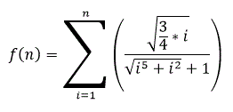

|
|
| Actividad:
Desarrollando
programas en C No. 6. Unidad: Estatutos de repetición. |
|
| Descripción | |
 |
|
| Modalidad | |
 |
|
| Objetivos de la actividad | |
 |
|
| Instrucciones | |
 |
Forma de trabajo:
Utiliza el siguiente
esquema como apoyo para desarrollar tus soluciones:
 Ejercicio 1 Implementa las siguientes funciones:
float potencia (int x, int n)
{ } casos de prueba

casos de prueba
Existen diferentes algoritmos que nos permiten obtener una cercana aproximación al valor de la constante PI, uno de ellos es el Algoritmo de Gottfried Wilhem von Leibniz:  Entre mayor sea el límite de la serie (N), más cercana la aproximación que se obtiene. Implementa la función aproximación_PI, que recibe el límite N de la serie para calcular la aproximación de PI. El encabezado de la función, podría ser el siguiente: float aproximación_PI (long int N) { } casos de prueba
En el main() construye un menú que muestre las siguientes opciones: FUNCIONES: 1. Potencia 2. Evaluar sumatoria 3. Aproximación del valor de PI. 4. Salir Opción De acuerdo a la opción seleccionada por el usuario utiliza la función apropiada de las implementadas anteriormente. Recuerda que la captura de datos y validación de valores debe ser realizada en el main( ), pues las funciones NO pueden realizar las tareas de validación o captura de datos. Incluye el algoritmo como comentario antes de cada función. Programa Abierto: Genera
tu propio programa donde apliques ciclos while de al menos dos forma
diferentes, por formas diferentes se hace referencia a su estructura y
forma de contar. Este programa es tuyo, úsalo para hacer cosas interesante y retadoras no cosas fáciles. |
| Recursos | |
 |
|
| Especificaciones de entrega | |
 |
|
 |
|
| DR© Tecnológico de Monterrey Campus Querétaro| Departamento de Desarrollo Académico| México, 2012 | |